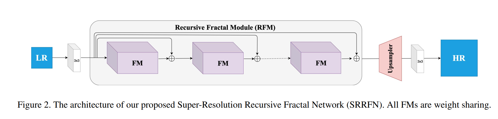
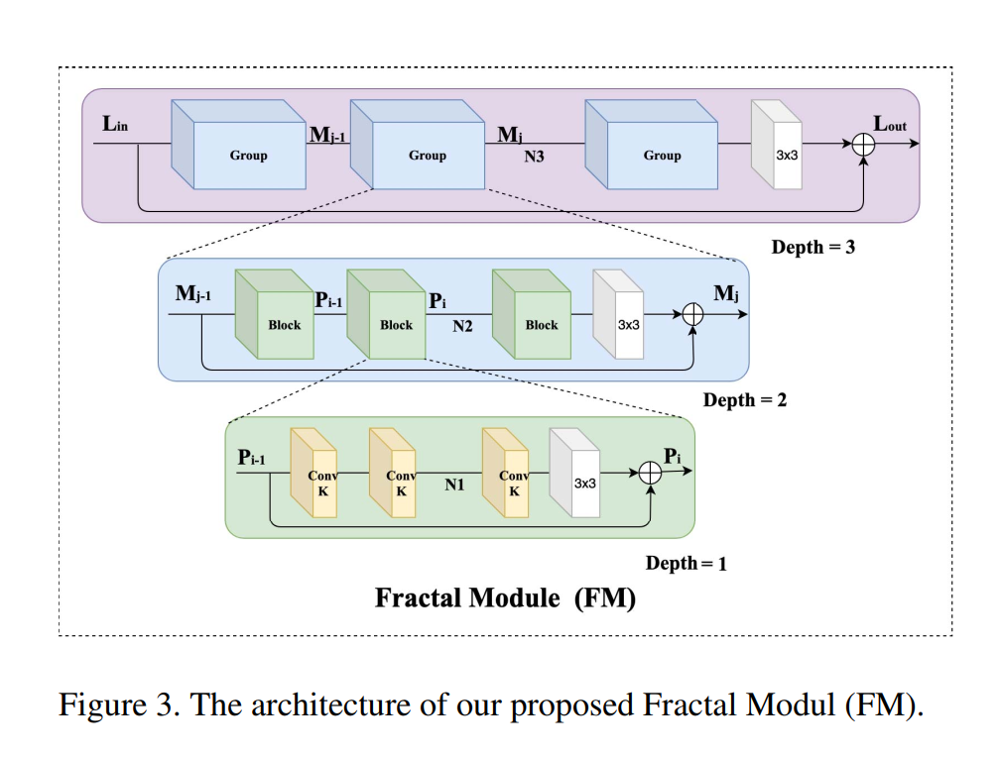
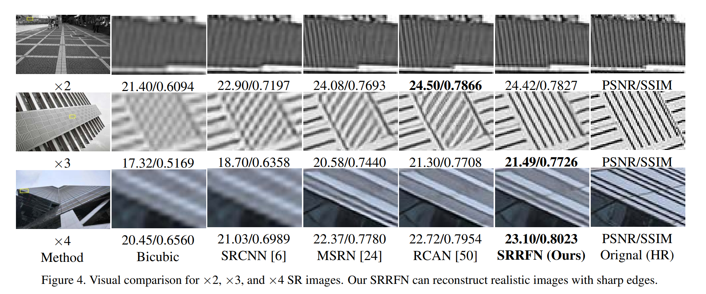
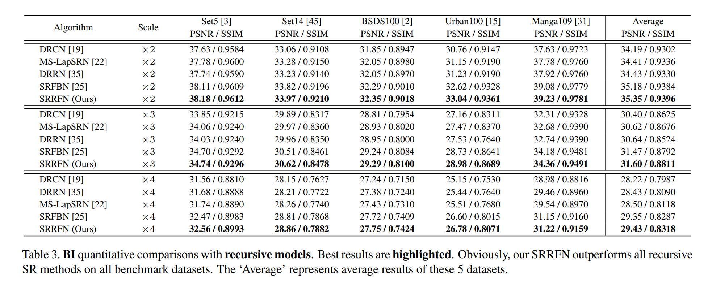
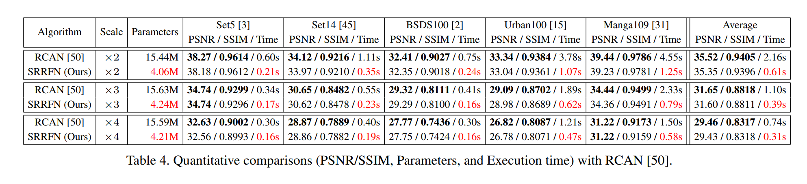
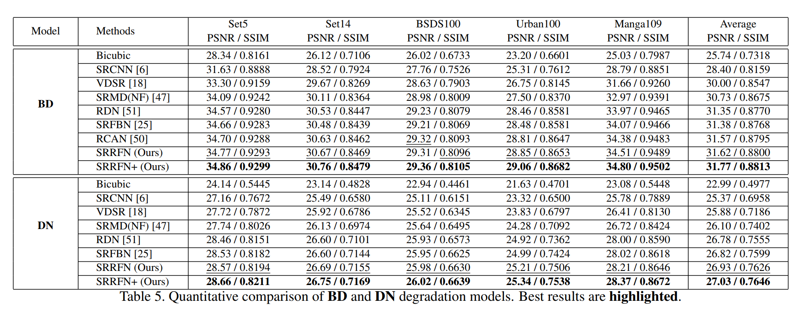

Lightweight and Accurate Recursive Fractal Network for Image Super-ResolutionJuncheng Li1 Yiting Yuan1 Kangfu Mei2 Faming Fang11 East China Normal University 2 The Chinese University of Hong Kong (Shenzhen)Contact us: cvjunchengli@gmail.con |
Abstract
Convolutional neural networks have recently achieved great success in image super-resolution (SR). However, we notice an interesting phenomenon that these SR models are getting bigger, deeper, and more complex. Extensive models promote the development of SR, but the effectiveness, reproducibility and practical application prospects of these new models need further verification. In this paper, we propose a lightweight and accurate SR framework, named Super-Resolution Recursive Fractal Network (SRRFN). SRRFN introduces a flexible and diverse fractal module, which enables it to construct infinitely possible topological substructure through a simple component. We also introduce the recursive learning mechanism to maximize the use of model parameters. Extensive experiments show that our SRRFN achieves favorable performance against state-ofthe-art methods with fewer parameters and less execution time.
SRRFN
|  |
|  |
Visual Results
|  |
PSNR/SSIM Results
|
|  |
|  |
|  |
Downloads
| Paper | : [ ICCVW_LCI_2019.pdf ] |
| Poster | : [ SRRFN_Poster.pdf ] |
| Poster | : [ SRRFN_Slides.pdf ] |
| Experimental results | : [ SRRFN_SR_Images.zip ] |
| Pre-trained model | : [ ICCVW2019_SRRFN_premodel.zip ] |
| Source Code. | : [ Code ] |
BibTex